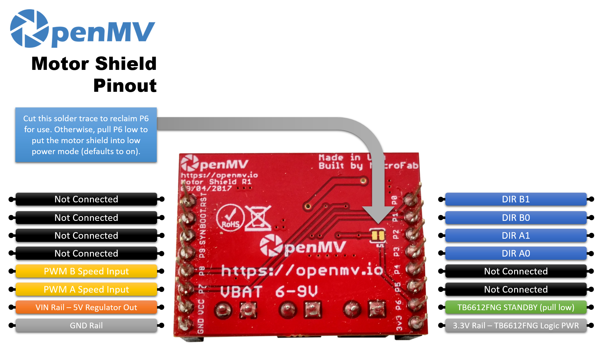

Motor Shield¶
Motor Shieldは、TB6612FNGデュアルHブリッジを使用してOpenMV Camから2個のDCモーターを駆動します。NCP1117 5 Vリニアレギュレータを搭載し、単一の6.5～18 Vバッテリー入力からカメラとモーターの両方に電源を供給します。

完全なデータシート、写真、注文方法については、Motor Shield製品ページ を参照してください。
主な特長¶
PWM速度制御付きの独立した2つのモーターチャンネル
チャンネルあたり最大2 Aの駆動電流
バイポーラステッパーモーターも駆動可能
Servo Shieldと積み重ね可能
ピン配置¶
{kind=link}

ピンリファレンス¶
ピン |
機能 |
|---|---|
P0 |
DIR B1（モーターBの方向） |
P1 |
DIR B0（モーターBの方向） |
P2 |
DIR A1（モーターAの方向） |
P3 |
DIR A0（モーターAの方向） |
P6 |
TB6612FNG STANDBY — デフォルトでオン。Lowに引っ張ると低電力モードに入ります |
P7 |
モーターAのPWM速度入力 |
P8 |
モーターBのPWM速度入力 |
VBAT入力 |
ネジ端子上の6.5～18 Vバッテリー入力（NCP1117の制限） |
VIN出力 |
オンボードNCP1117レギュレータから5 V（カメラに電源を供給） |
3.3Vレール |
TB6612FNGのロジックに電源を供給 |
GNDレール |
共通グラウンド |
注釈
P6はデフォルトでTB6612のSTANDBY入力を駆動します。ピンを別の用途に使いたい場合は、シールド裏面のはんだトレースをカットしてP6を切り離してください（その場合、ドライバーは有効なままになります）。
注釈
TB6612FNGは、2入力真理値表とPWMイネーブルを通じて各モーターを駆動します。モーターAの場合（STBYがHigh、PWMAが任意の非ゼロデューティのとき）：
(P3, P2) = (H, L)→ 正転(P3, P2) = (L, H)→ 逆転(P3, P2) = (L, L)→ コースト（出力Hi-Z）(P3, P2) = (H, H)→ ブレーキ（両出力ともLow）
PWMAをLowにすると、方向入力に関係なく短絡ブレーキがかかります。デューティサイクル0 %でモーターがブレーキします。モーターBはPWMをP8に使用して (P1, P0) で同じ表に従います。
使い方¶
固定PWMデューティでモーターAを正転 → ブレーキ → 逆転 → コーストと循環させます:
from machine import Pin, PWM
import time
a0 = Pin("P3", Pin.OUT) # AIN1
a1 = Pin("P2", Pin.OUT) # AIN2
pwma = PWM(Pin("P7"), freq=1_000, duty_u16=40_000) # ~60%
def drive(in1, in2):
a0.value(in1)
a1.value(in2)
while True:
drive(1, 0) # forward
time.sleep(2)
drive(1, 1) # brake
time.sleep_ms(500)
drive(0, 1) # reverse
time.sleep(2)
drive(0, 0) # coast
time.sleep_ms(500)
可変速度制御の場合は、方向入力を一定に保ち、PWMAをランプさせます。以下のループは、モーターAをコーストから全速正転まで上げてから下げます:
from machine import Pin, PWM
import time
Pin("P3", Pin.OUT, value=1) # AIN1=H
Pin("P2", Pin.OUT, value=0) # AIN2=L → forward direction
pwma = PWM(Pin("P7"), freq=1_000, duty_u16=0)
while True:
for duty in range(0, 65_536, 1024):
pwma.duty_u16(duty)
time.sleep_ms(10)
for duty in range(65_535, -1, -1024):
pwma.duty_u16(duty)
time.sleep_ms(10)
TB6612の2つのHブリッジは、バイポーラステッパーをウェーブ駆動することもできます。一度に1つのコイルを励磁し、4相を進めます。両方のPWMチャンネルを希望の駆動電流に保ち、step() を呼び出していずれかの方向に1完全シーケンスを進めます:
from machine import Pin, PWM
import time
a0 = Pin("P3", Pin.OUT)
a1 = Pin("P2", Pin.OUT)
b0 = Pin("P1", Pin.OUT)
b1 = Pin("P0", Pin.OUT)
PWM(Pin("P7"), freq=1_000, duty_u16=32_768) # 50% drive on A
PWM(Pin("P8"), freq=1_000, duty_u16=32_768) # 50% drive on B
SEQUENCE = [(1, 0, 0, 0), (0, 0, 1, 0), (0, 1, 0, 0), (0, 0, 0, 1)]
def step(forward=True):
for s in SEQUENCE if forward else reversed(SEQUENCE):
a0.value(s[0])
a1.value(s[1])
b0.value(s[2])
b1.value(s[3])
time.sleep_ms(5)
while True:
for _ in range(50): # ~1 revolution forward (200 phases)
step()
for _ in range(50): # ~1 revolution backward
step(forward=False)
オンボードのSTANDBYラインはデフォルトでHigh（ドライバー有効）です。P6をLowに引っ張ると、TB6612をスリープさせます:
from machine import Pin
Pin("P6", Pin.OUT).value(0) # standby